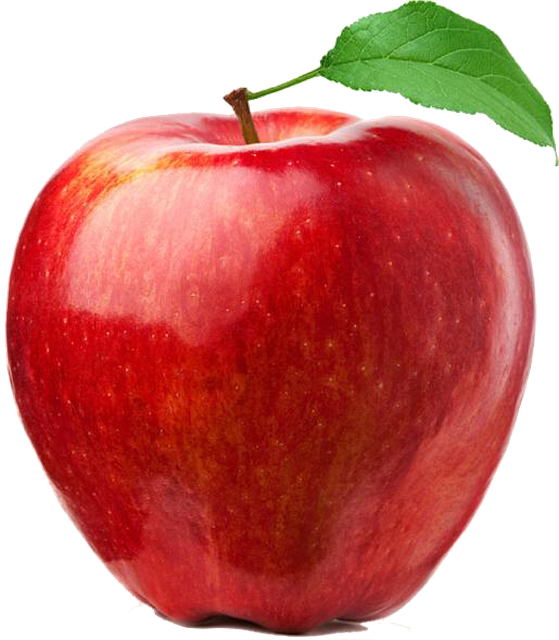

Smart City
Big group project
Design thinking
Arduino
C++
Design thinking
Arduino
C++
https://pixabay.com/fr/photos/ville-intelligent-moderne-avenir-4317139/
Smart harness
Group project
Design thinking
entrepreneurship learning
Design thinking
entrepreneurship learning
https://www.wallpaperflare.com/sweden-amstaff-american-staffordshire-dog-puppy-rottweiler-wallpaper-eyxpo

Life simulation game
Group project
Design thinking
Java
Design thinking
Java
https://pixabay.com/fr/illustrations/pomme-pomme-rouge-fruit-coup%C3%A9-6810736/
Smart City
The project
This project was a group project including the whole class (about 20 people) in it, with everyone working on a specific task.
The aim was to create a miniature model of a smart city, with for examples automatic car parks, lights getting on and off automatically when someone passes by, automatic cars and so on.
We made this project on our bachelor's degree first year so we lacked knowledge to go fast enough to go through the whole project but everyone did his best and we made a good beginning for the project.
My task
I was personally in charge of developing automatic barriers for car parks.
I had to learn the very basics of Arduino programming to be able to make at first a barrier gets up and down (opens and closes). Then I had to learn about the RFID technology, how it works and how to manipulate it so I can do what I want with it. The result was that the barrier could open and close so the car would be able to go through
I had to learn the very basics of Arduino programming to be able to make at first a barrier gets up and down (opens and closes). Then I had to learn about the RFID technology, how it works and how to manipulate it so I can do what I want with it. The result was that the barrier could open and close so the car would be able to go through
Personnal opinion
My thought on the project is that it was a pretty interesting one, with a great goal and something concrete to build.
It was not too easy because we were full beginners in this domain and so was a little challenging.
I was also happy having been able to succeed to my task because I started it from scratch and with absolutely no knowledge, even though it does not look hard from my perspective now.
Smart Harness
The project
This project was a 2 years project with a group of 4.
It all started when we had in class to think about different innovative projects, things that did not exist.
We had to do a brain storming and to think several weeks about possible project ideas and how they could take form.
Once we found our idea, the dog smart harness, we had to think about what would be our product main functions, how we could develop them as well as the product itself, discuss with researchers about the feasability, estimate the cost.
Personnal opinion
My personal thought on this project was that it was pretty interesting even though it didn't lead to anything in the end.
With this project I've been able to learn the very basics of entrepreneurship, the different steps to go through to develop a product, and also to increase my capacity to innovate and to search for things by myself.
Web parser
The project
This project was a 4-person group project during a whole year.
The goal of this project was to be able to parse every links that we could find starting up from a specific link and to then parse every links found and to continue like that until no more new link found. Then we had to build a user interface so the user would be easily able to start the parsing, to display a network graph that we can build up using all these parsed links, interesting statistics and some other things.
The goal of this project was to be able to parse every links that we could find starting up from a specific link and to then parse every links found and to continue like that until no more new link found. Then we had to build a user interface so the user would be easily able to start the parsing, to display a network graph that we can build up using all these parsed links, interesting statistics and some other things.
My tasks
For this project, I was personally in charge of creating a part of the user interface as well as parsing and analysing "Robots.txt" and "sitemap" files, understanding and processings statistics.
For the user interface, we had to use JavaFX which was the first time I had to make a user interface and so had to learn a lot of things about it.
For the statistics part, I had to learn and to know how to process local and global transitivity, distance using the Dijkstra algorithm, reciprocity and the assortativity coefficient.
For the user interface, we had to use JavaFX which was the first time I had to make a user interface and so had to learn a lot of things about it.
For the statistics part, I had to learn and to know how to process local and global transitivity, distance using the Dijkstra algorithm, reciprocity and the assortativity coefficient.
Personnal opinion
It was a challenging and interesting project, my first one that was that long, that had to be done that cautiously, with a git that needed to be clean enough and to respect a lot of requests.
We all had very separated tasks and it felt like our first real project which I enjoyed a lot.
Report and sources
You can find the project and its report in the following zip file (language: French).
Life simulation game
The project
The life simulation game project was a 3-person group project.
In this game the player start with a character of his choice between 3 selectable that have different characteristics. There is one that can for example drive a car. They all have a certain number of life, hunger, hydration and moral and if one of them reaches 0, the character dies. On every actions, they use randomly a little of these characteristics.
To move, there is a map compound of different types of cases, like for example simple roads, traps, university, fast food, and more. Each case has a specific result, for example the fast food fills the character's hunger bar, whereas when going to the university, the characters has a chance of getting his diploma. The goal of the this game is to get the maximum of diploma as there is no limit for this.
In this game the player start with a character of his choice between 3 selectable that have different characteristics. There is one that can for example drive a car. They all have a certain number of life, hunger, hydration and moral and if one of them reaches 0, the character dies. On every actions, they use randomly a little of these characteristics.
To move, there is a map compound of different types of cases, like for example simple roads, traps, university, fast food, and more. Each case has a specific result, for example the fast food fills the character's hunger bar, whereas when going to the university, the characters has a chance of getting his diploma. The goal of the this game is to get the maximum of diploma as there is no limit for this.
Personnal opinion
My thought on this project was that it was pretty fun and interesting.
I also liked the fact to be able to develop this project in a group of 3.
We have been able to discuss very well the design of the project using diagrams, how we wanted to build it and to take advantage greatly of the object-oriented programming.
Class diagram of our project
Report and sources
You can find the project and its report in the following zip file (language: French).